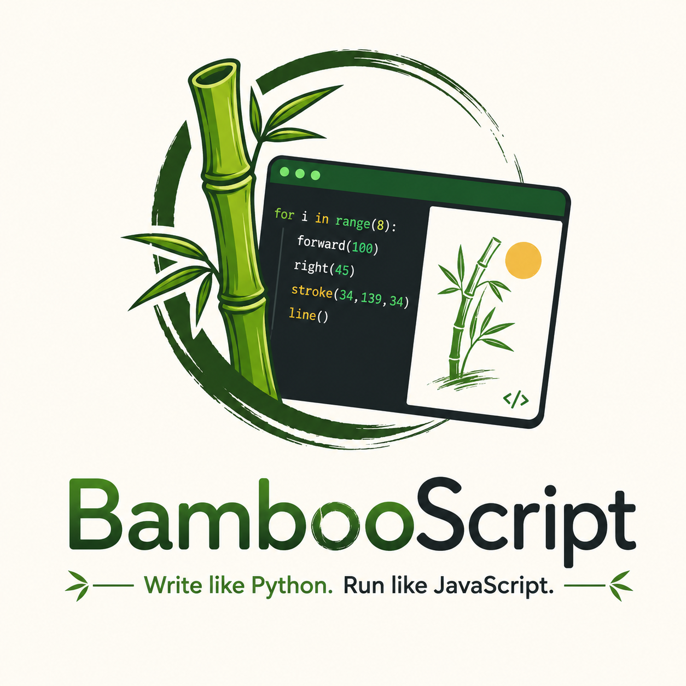

BambooScript is a Python-flavored scripting language built for BambooGrove — a canvas-based, p5.js-compatible IDE that teaches programming through turtle graphics and visual code. No installs, no accounts, no build step.

One shared editor, three tabs, and a standard library that grows with you.
forward()/turn() turtle moves, plus a p5.js-compatible layer — shapes, color, noise, vectors — for anyone who already knows p5.js.
Indentation, def, for/while/if — familiar from the first line, with none of Python's install overhead.
No server, no build step. Scripts transpile straight to JS and run instantly in the browser tab.
Switch the same editor to a plain print()/input() mode for classic top-to-bottom scripting practice.
import / from ... import across a flat-folder project, so bigger sketches can be split across files.
A full standard-library cheat sheet lives one tab away — never leave the IDE to look something up.
BambooScript reads like Python and moves like a turtle:
forward() and turn() drive a pen around
the canvas, so a loop becomes a shape almost immediately.
def setup(): and def draw():for and while both work exactly like you'd expectcircle(), noise(), createVector() — whenever you're ready for moredef setup():
background(20, 20, 20)
stroke(34, 139, 34)
def draw():
no_loop()
for i in range(6):
forward(120)
turn(60)